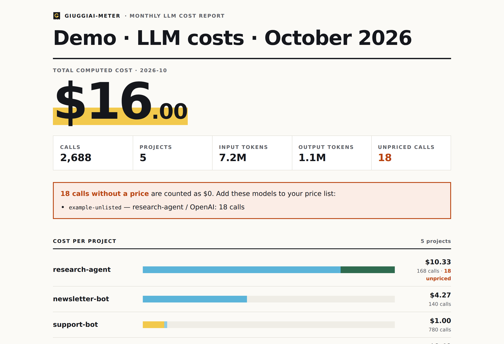
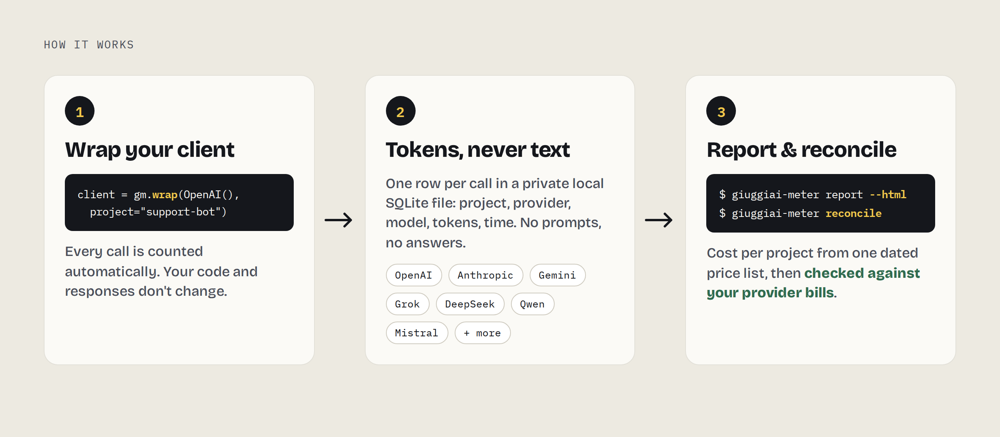

Every AI call counted.
Every dollar reconciled.
Know what each project really spends on AI — and check it against the bill. One line of code, every major provider, zero dependencies.
Why
Cost per projectEvery call tagged with the project that made it.
Closed against the billComputed vs official total, in USD and %.
One line to plug inWrap your client. Responses unchanged.
Tokens, never textPrompts and answers are never stored.
Try it in 60 seconds
pip install giuggiai-meter giuggiai-meter demo

Use it
import giuggiai_meter as gm from openai import OpenAI client = gm.wrap(OpenAI(), project="support-bot")
Works with OpenAI, Azure OpenAI, Anthropic, Google Gemini, xAI Grok, DeepSeek, Alibaba Qwen, Mistral, Cohere, AWS Bedrock, Ollama, Groq, Together, Fireworks, OpenRouter, Perplexity, Moonshot Kimi, Zhipu GLM. Full table.
How it works
